CE144 Object Oriented Programming with C++
Subject Cordinator: - Prof. Priyanka Patel
Subject Name: - Object Oriented Programming with C++
Semester: - 2
| PRACTICAL LIST | |
|---|---|
| 1 |
Write a C++ program that will print output in the following form. Make sure your output looks exactly as shown here (including spacing, line breaks, punctuation, and the title and author). Use cout and cin objects and endl manipulator. 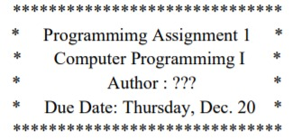 Question: Difference between \n and endl. |
| 2 |
Write a program to create the following table.
Use endl and setw manipulator.
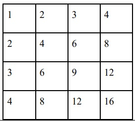 |
| 3 |
Write a C++ program to add two floating numbers using pointer. The result should contain only two digits after the decimal. Use fixed, scientific and setprecision () manipulators for controlling the precision of floating point numbers. |
| 4 | Write a C++ program to find out sum of array element using Recursion. Question: Show stepwise solution of winding and unwinding phase of recursion |
| 5 | Find error in the following code and give reasons for each error:
Can we declare an array of references? Can we assign NULL value to reference
variable? Is Reference variable a pointer variable? Can we declare a
reference
variable without initializing it? Does Reference Variable change the
original value
of variable? 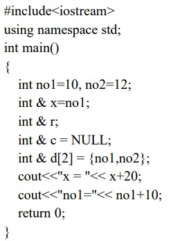 |
| 6 | Find output of the following code: Explain how scope Resolution operator is
used
to access global version of a variable. 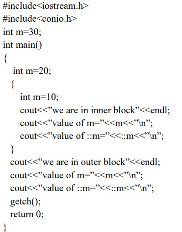 |
| 7 | Write a program to enter a size of array. Create an array of size given by user using “new” Dynamic memory management operator (free store operator). Enter the data to store in array and display the data after adding 2 to each element in the array. Delete the array by using “delete” memory management operator. |
| 8 | Find Error in the following code of a program and give explanation why these
errors
exist.
NOTE: USE reference of other material as there is a mistake in 6th edition
of Bala
Guruswamy. 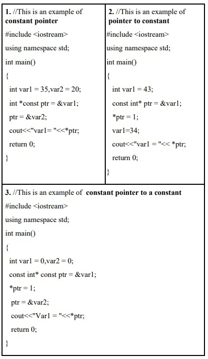 |
| 9 | Find the output of following program. Explain the use of bool data type. 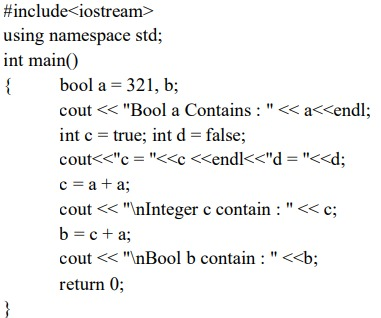 |
| Function | |
| 10 | Define three functions named divide(). First function takes numerator and denominator as an input argument and checks it’s divisible or not, Second function takes one int number as input argument and checks whether the number is prime or not and Third function takes 3 float number as argument and finds out average of the numbers. Use concept of Function Overloading / static binding. |
| 11 | Write a function called tonLarge() that takes two integer arguments call by reference and then sets the larger of the two numbers to 100 using Return by reference. Write a main() program to exercise this function. |
| 12 | Write a function called power () that takes two arguments: a double value for n and an int for p, and returns the result as double value. Use default argument of 2 for p, so that if this argument is omitted, the number will be squared. Write a main () function that gets values from the user to test this function. |
| 13 | Define a C++ Structure Rectangle with data member’s width and height. It has get_values() member functions to get the data from user and area() member functions to print the area of rectangle. Also create a C++ Class for the above program. Define both functions inside the class. Member function defined inside the class behaves like an inline function and illustrate the difference between C++ Structure and C++ Class. |
| 14 | Write a C++ program having class Batsman. It has private data members:
batsman
name, bcode (4 Digit Code Number), innings, not out, runs, batting average.
Innings,
not out and runs are in integer and batting average is in float.Define
following
function outside the class using scope resolution operator. 1) Public member function getdata()to read values of data members. 2) Public member function putdata()to display values of data members. 3) Private member function calcavg() which calculates the batting average of a batsman. Also make this outside function inline. Hint : batting average = runs/(innings - notout) |
| 15 | Define class Currency having two integer data members rupee and paisa. A class has member functions enter() to get the data and show() to print the amount in 22.50 format. Define one member function sum() that adds two objects of the class and stores answer in the third object i.e. c3=c1.sum (c2). The second member function should add two objects of type currency passed as arguments such that it supports c3.add(c1,c2); where c1, c2 and c3 are objects of class Currency. Also Validate your answer if paisa >100. Write a main( )program to test all the functions. Use concepts of Object as Function Arguments, function returning object and function overloading. |
| 16 | Define a class Dist with int feet and float inches. Define member function
that
displays distance in 1’-2.5” format. Also define member function scale ( )
function
that takes object by reference and scale factor in float as an input
argument. The
function will scale the distance accordingly. For example, 20’-5.5” and Scale Factor is 0.5 then answer is 10’-2.75” |
| 17 | Create a Class Gate for students appearing in Gate (Graduate Aptitude test for Engineering) exam. There are three examination center Vadodara, Surat, and Ahmedabad where Gate exams are conducted. A class has data members: Registration number, Name of student, Examination center. Class also Contains static data member ECV_Cnt, ECS_Cnt and ECA_Cnt which counts the number of students in Vadodara, Surat and Ahmedabad exam center respectively. Class Contains two Member function getdata () which gets all information of students and counts total students in each exam center and pudata () which prints all information about the students. Class also contains one static member function getcount () which displays the total number of students in each examination center. Write a program for 5 students and display the total number of students in each examination center. Use static data member, static member function and Array of Objects. |
| 18 | Define a class Fahrenheit with float temp as data member. Define another class Celsius with float temperature as data member. Both classes have member functions to input and print data. Write a non-member function that receives objects of both the classes and declare which one is higher than another according to their values. Also define main() to test the function. Define all member functions outside the class. (Formula for converting Celsius to Fahrenheit is F = (9C/5) + 32). Use the concept of friend function |
| 19 | Create a Class Date having data members: int dd, mm, yyyy. Class has one member function to input the dates and another member function which prints the dates. Write a main() function which takes two dates as input. Write a friend function swapdates() which takes two objects by reference of type Date and swaps both the dates. Use the concept of Friend function which takes objects by reference |
| 20 | Create a class LAND having data members: length, width, area1. Write member functions to read and display the data of land. Also, calculates the area of the land. Create another class TILES having data members: l, w, area2. Write a member function to get the data of tile. Calculate the area of one tile. Class TILE has a member function named number_of_tiles() which is a friend of class LAND and takes the object of class LAND by reference which calculates the number of tiles which can be put over the land area. Write the main function to test all the functions. Use the concept of member function of one class can be a friend function of another class. |
| 21 | Create a class Child having data members: name of the child and gender and a member function to get and print child data. Create another class Parent which is a friend class of child class. Class Parent have member function ReadChildData() which takes child’s object by reference as input argument and Reads the childs data and DisplayChildData() which takes childs object as argument and displays childs data. Use the concepts of Friend Class. |
| 22 | Check the following C++ code and find if there is any error in code, give
justification for the error, correct the code and write the output: 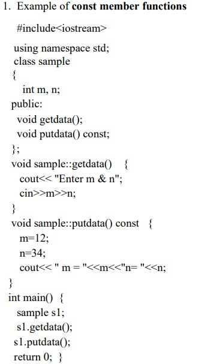 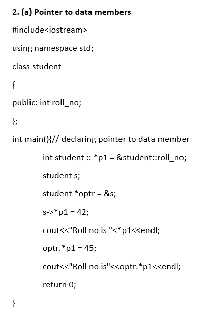 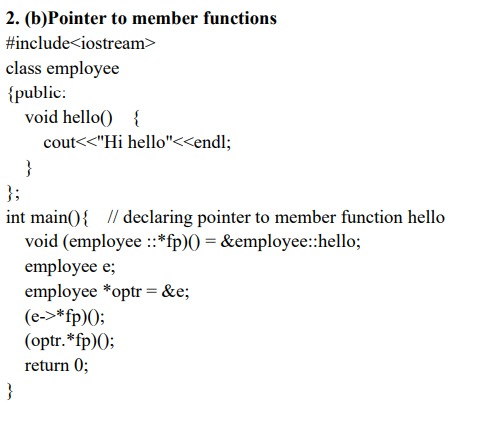 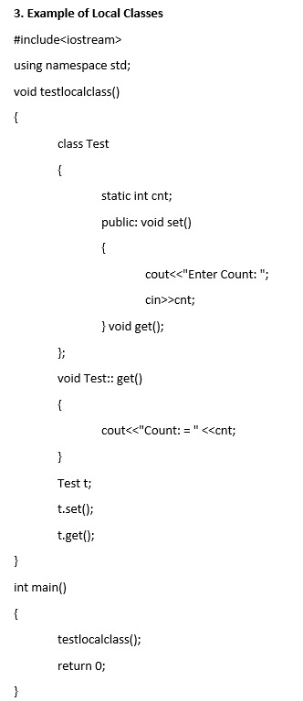 |
| Constructor and Destructor | |
| 23 | Write a C++ program having class time with data members: hr, min and sec.
Define following member functions. 1) getdata() to enter hour, minute and second values 2) putdata() to print the time in the format 11:59:59 3) default constructor 4) parameterized constructor 5) copy constructor 6) Destructor. Use 52 as default value for sec in parameterized constructor. Use the concepts of default constructor, parameterized constructor, Copy constructor, constructor with default arguments and destructor. |
| Operator Overloading & Type Conversion | |
| 24 | Create a class Number having int num as member. The class has input and output functions. Overload unary operator (++) such that it supports N1=N2++ and N3=++N1 and Overload unary (-) such that it supports N3 = - N3. Also define default, parameterized and copy constructor for the class. Also explain use of nameless object in operator overloading. Use the concept of Overloading Unary Operators. |
| 25 | Create a class complex having data members int real , img and member function to print data. Overload Unary operator (-) using friend function such that it supports – C1 where C1 is the object of class complex. Also define default, parameterized and copy constructor for the class. Use the concept of Overloading Unary Operators with friend function. |
| 26 | Create a class String having character array. Class includes constructor and required member functions to get and display the object. Overload the operators +(s3=s1+s2), ==(s1 1+=s2) for the class. Use the concept of Overloading Binary Operators |
| 27 | Create a class Measure having members: meter and cm. The class has get( ) and put( ) functions. Overload operator + and – such that they support M1=M2+15 and M3=M1 – 4.5. Also overload + and – such that they support M1=5.0+M2 and M3=2.0 – M4. Write a main( ) to test the class. Use the concept of Overloading Binary Operators with friend function. |
| 28 | Create a class Celsius with float. Define appropriate member functions such that it support the statements: C1=30.5F; float temperature; temperature=C2; Use the concept of Type conversion from basic type to class type and class type to basic type |
| 29 | Create classes Celsius and Fahrenheit with float. Define appropriate member functions such that they support the statements in main( ): Celsius C1, C2=5.0; Fahrenheit F1, F2; F1=C2; C1=F2;Use the concepts of Type conversion from class type to class type.Write this Program in two ways. Define appropriate member function in class Celsius. Define appropriate member function in class Fahrenheit. |
| Inheritance | |
| 30 | Define a Base Class Vegetable having data member Color and member function getdata() which takes color as an input and putdata() which print the color as an output.Vegetable Class has one subclass named Tomato having data members weight and size and member function gtdata() which takes weight and size as an input and ptdata() which prints weight and size as output. Write a C++ Program which inherits the data of Vegetable class in Tomato class using Single Inheritance. |
| 31 | Write a program to create a class Medicine which stores type of medicine, name of company, date of manufacturing. Class Tablet is inherited from Medicine. Tablet class has name of tablet, quantity per pack, price of one tablet as members. Class Syrup is also inherited from Medicine and it has quantity per bottle, dosage unit as members. Both the classes contain necessary member functions for input and output data. Write a main( ) that enter data for tablet and syrup, also display the data. Use the concepts of Hierarchical Inheritance |
| 32 | Create a Class alpha having data member: int x and one argument constructor which initializes the value of x. It also has member function which displays the value of x. Create another class beta which contains data member: float y and one argument constructor which initializes the value of y. It also has member function which displays the value of y. Create a Class Gamma which publicly inherits from class alpha and class beta and has two data members: int m, n and a constructor which passes argument to the base class constructor as well as initializes its own data members. Class Gamma also has member function to print the values of m and n. Write main function which creates object of class Gamma which passes values of base class constructor as well as derived class constructor. Use the concept of Multiple Inheritance and Constructor in Derived Class. |
| 33 | Define a class Hospital having rollno and name as data members and member function to get and print data. Derive a class Ward from class Hospital having data members: ward number and member function to get and print data. Derive another class Room from Hospital having data member bed number and nature of illness and member function to get and print data. Derive class Patient from Class Ward and Class Room. In main () declare 5 object of Class Patient and get and display all the information. Use the concept of Virtual Base Class and Hybrid Inheritance. |
| 34 | Create a class shape having data member shape_name and member function to get and print shape_name. Derive a Class Circle which is inherited publicly from class shape and having data members radius of a circle and member function to get and print radius of a circle. Derive a Class Area which is inherited publicly from Class Circle and having data members area_of_circle and member function display () which displays area of a circle. Use object of class Area in main () function and get and display all the information. Use the concepts of Multilevel Inheritance |
| 35 | Create one application n a group of 3 person which implement all type of inheritance |
| 36 | What is the output of the following code: 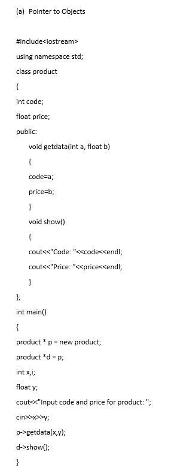 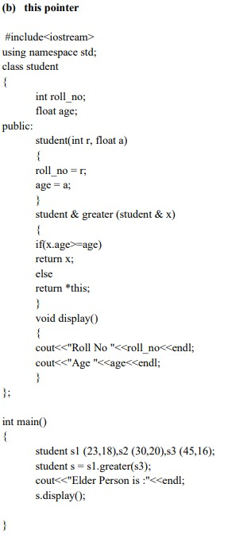 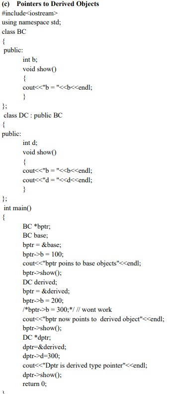 |
| 37 | Create a class Media that stores the title (a string) and price (float). Class Media has two argument constructor which initializes data members of class Media. Also declare a virtual function display () in Class Media. From the class Media derive two classes: Class book, which contains data member page count (int): and Class tape, which contains data member playing time in minutes (float). Both Class book and Class tape should have a constructor which initializes base class constructor as well as its own data members and display ( ) function which displays book details and tape details respectively. Write a main ( ) to test book and tape classes by creating instances of them, asking the user to fill data and displaying them. Use the concept of Virtual function and Constructor in Derived Class. |
| 38 | Create an Abstract class vehicle having average as data and pure virtual function getdata() and putdata(). Derive class car and truck from class vehicle having data members: fuel type (petrol, diesel, CNG) and no of wheels respectively. Write a main ( ) that enters the data of two cars and a truck and display the details of them. Use the concept of Abstract Base class and Pure Virtual functions. |
| File Handling | |
| 39 | Write a program that creates a text file that contains ABC…Z. A program should print the file in reverse order on the screen. i.e. ZYX…BA. Use concept of Opening the file using constructor and open() function. Use all error handling functions like eof() , fail() , bad() , good() and functions for manipulation of file pointer like seekg() and tellg(). |